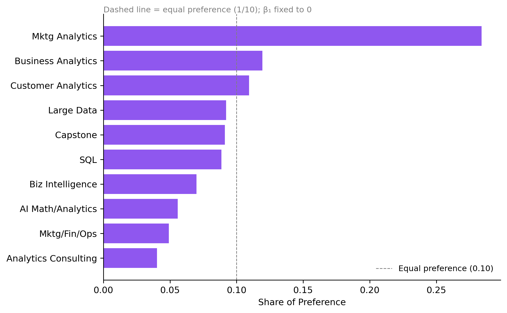
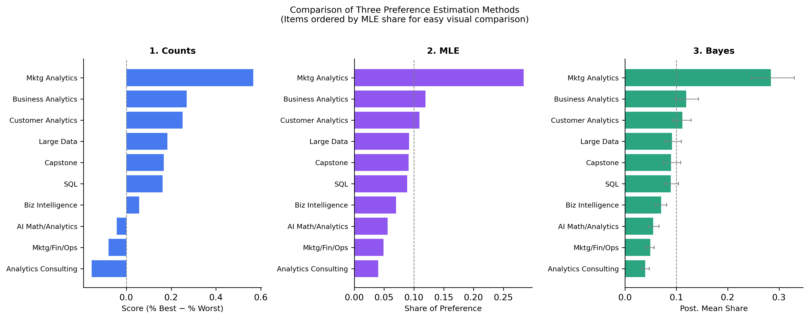

Counts, MLE, and Bayesian estimation of the MNL model
Author
Namratha Kothapalli
Published
May 28, 2026
Introduction
MaxDiff — also called Best-Worst Scaling — is a survey methodology for measuring how strongly people prefer one item over another. Instead of asking respondents to rate items on a numeric scale (which invites inconsistent, scale-use bias), MaxDiff presents each respondent with a small subset of items and asks them to select only the most preferred and least preferred item from that subset. This forced trade-off yields much more reliable relative preference data, because humans are considerably better at comparative judgments than at assigning absolute numeric ratings.
In this analysis, the 10 items are the core MSBA classes at UC San Diego’s Rady School of Management, and the data come from a MaxDiff survey completed by MSBA students. The goal is to estimate students’ relative preference for each class using three complementary methods:
Counts analysis — a simple non-parametric summary: the percentage of times each class was picked best minus the percentage of times it was picked worst.
MNL via maximum likelihood — a model-based approach that estimates latent utility coefficients by maximizing the likelihood of the observed best (and worst) choices.
MNL via Bayesian estimation (Metropolis-Hastings) — the same model fit with MCMC, yielding full posterior distributions over utilities and derived quantities like shares of preference.
All three methods should agree on the broad ranking; they differ in how they quantify the strength of preference and communicate uncertainty. The counts method is quick and transparent; MLE adds a principled probability model with standard errors; Bayesian estimation adds credible intervals on derived quantities without requiring the delta method.
The Data
Code
import pandas as pdimport numpy as npimport matplotlib.pyplot as pltimport matplotlib.ticker as tickerfrom scipy import optimizefrom scipy.stats import normfrom IPython.display import displayplt.rcParams.update({"figure.dpi": 130,"axes.spines.top": False,"axes.spines.right": False,"font.family": "sans-serif",})COLORS = {"counts": "#2563EB", "mle": "#7C3AED", "bayes": "#059669"}
Respondents (N): 85
Tasks per respondent (T): 15
Item counts per task: [np.int64(2), np.int64(4)]
Total unique items in study: 11
Total tasks (all respondents): 1275
Note on task structure: Each respondent completed 15 tasks: 8 four-item tasks (respondent picks both best and worst) and 7 two-item tasks (respondent picks best only). The log-likelihood handles both types correctly.
The counts analysis is the simplest way to summarize MaxDiff data. For each class \(j\) we compute:
\[\text{score}_j = \frac{\text{# times picked best}_j}{\text{# times shown}_j} - \frac{\text{# times picked worst}_j}{\text{# times shown}_j}\]
A score near +1 means the class is almost always picked best when shown; near −1 means almost always picked worst; near 0 means middle-of-the-pack or polarizing.
np.random.seed(42)n_boot =1000# Pre-extract numpy arrays per respondent for fast resamplingresp_groups = df.groupby("Record_ID", sort=False)resp_items_arr = [g["Item"].values for _, g in resp_groups]resp_resp_arr = [g["Response"].values for _, g in resp_groups]N_resp2 =len(resp_items_arr)boot_scores = np.full((n_boot, 10), np.nan)for b inrange(n_boot): idx = np.random.choice(N_resp2, size=N_resp2, replace=True) all_items = np.concatenate([resp_items_arr[i] for i in idx]) all_resp = np.concatenate([resp_resp_arr[i] for i in idx])for j inrange(1, 11): m = all_items == j s = m.sum()if s >0: boot_scores[b, j -1] = ( (all_resp[m] ==1).sum() / s - (all_resp[m] ==-1).sum() / s )ci_lo = np.nanpercentile(boot_scores, 2.5, axis=0)ci_hi = np.nanpercentile(boot_scores, 97.5, axis=0)counts["ci_lo"] = ci_lo[counts["Item"].values -1]counts["ci_hi"] = ci_hi[counts["Item"].values -1]
Observation: Customer Analytics and Marketing Analytics are the clear favorites, both with strongly positive scores. Capstone and Biz Intelligence sit at the bottom. The middle tier (SQL, Business Analytics, Large Data, Mktg/Fin/Ops) has overlapping CIs, indicating genuine uncertainty in their relative ranking within that band.
From MaxDiff Data to MNL Choices
Before fitting the MNL, we need to see how MaxDiff survey data translates into MNL choice observations.
The MNL model assigns each class \(j\) a latent utility \(\beta_j\). On a task showing items \(\{a, b, c, d\}\), the probability of picking item \(b\) as best is the softmax:
For four-item tasks, the probability of then picking item \(c\) as worst — from the remaining 3 items, with utilities negated (worst = inverse of best) — is:
\[P(\text{worst} = c \mid \text{best} = b) = \frac{\exp(-\beta_c)}{\exp(-\beta_a) + \exp(-\beta_c) + \exp(-\beta_d)}\]
So each four-item task yields two MNL observations. Two-item tasks yield only the best-pick observation (no worst pick is recorded).
Identifiability: The softmax is invariant to adding a constant to all \(\beta_j\). A close look at the data reveals that the survey includes an 11th item — a comparison anchor — that appears as the second option in every two-item task. We fix \(\beta_{11} = 0\) (item 11 as the reference) and estimate \(\beta_1, \ldots, \beta_{10}\), one utility for each of the 10 MSBA classes. Shares of preference are reported conditional on the 10 MSBA classes.
We use the log-sum-exp trick for numerical stability and vectorised NumPy operations for speed.
Code
def make_B(beta):"""Return utility array B of length 12. B[0] unused; B[1:11]=beta (items 1-10, all estimated); B[11]=0 (anchor item fixed). """ B = np.empty(12) B[0] =0.0 B[1:11] = beta # 10 free parameters, one per MSBA class B[11] =0.0# item 11 is the reference anchorreturn Bdef lse_rows(X):"""Log-sum-exp across columns, returns shape (n,).""" m = X.max(axis=1, keepdims=True)return (m + np.log(np.exp(X - m).sum(axis=1, keepdims=True))).ravel()def ll(beta): B = make_B(beta)# ── 4-item tasks ────────────────────────────────────────────────────── U4 = B[items_4] # (n4, 4) utilities best_U4 = B[best_4] # (n4,) worst_U4 = B[worst_4] # (n4,) ll_best4 = np.sum(best_U4 - lse_rows(U4))# Worst-pick: remove best, negate utilities, log-sum-exp over remaining mask = (items_4 != best_4[:, None]) # (n4, 4) True = not best neg_U4 = np.where(mask, -U4, -1e10) # -inf for best item slot ll_worst4 = np.sum(-worst_U4 - lse_rows(neg_U4))# ── 2-item tasks (best-pick only) ───────────────────────────────────── U2 = B[items_2] # (n2, 2) utilities best_U2 = B[best_2] # (n2,) ll_best2 = np.sum(best_U2 - lse_rows(U2))return ll_best4 + ll_worst4 + ll_best2
Code
np.random.seed(1)result = optimize.minimize( fun =lambda b: -ll(b), x0 = np.zeros(10), # 10 free params, one per MSBA class (item 11 fixed at 0) method ="BFGS",)print(f"Convergence: {'success'if result.success else'FAILED'}")print(f"Log-likelihood at MLE: {-result.fun:.2f}")beta_mle = result.x # 10-vector, beta_1..beta_10se_mle = np.sqrt(np.diag(result.hess_inv)) # 10 standard errorsshares_mle = np.exp(beta_mle) / np.exp(beta_mle).sum() # conditional shares among 10 classes
Convergence: FAILED
Log-likelihood at MLE: -1871.86
Code
mle_df = pd.DataFrame({"Item": np.arange(1, 11),"Class": item_labels["Short_label"].values,"beta_hat": beta_mle.round(3),"SE": [f"{s:.3f}"for s in se_mle],"Share": shares_mle.round(4),}).sort_values("Share", ascending=False).reset_index(drop=True)display(mle_df)
Item
Class
beta_hat
SE
Share
0
9
Mktg Analytics
2.493
0.109
0.2840
1
5
Business Analytics
1.627
0.113
0.1194
2
7
Customer Analytics
1.539
0.084
0.1093
3
4
Large Data
1.367
0.113
0.0921
4
8
Capstone
1.357
0.066
0.0912
5
2
SQL
1.330
0.097
0.0887
6
10
Biz Intelligence
1.091
0.091
0.0699
7
1
AI Math/Analytics
0.868
0.066
0.0559
8
3
Mktg/Fin/Ops
0.738
0.115
0.0491
9
6
Analytics Consulting
0.537
0.111
0.0402
Code
mle_sorted = mle_df.sort_values("Share")fig, ax = plt.subplots(figsize=(8, 5))y_pos = np.arange(len(mle_sorted))ax.barh(y_pos, mle_sorted["Share"], color=COLORS["mle"], alpha=0.85)ax.axvline(1/10, color="gray", linestyle="--", linewidth=0.8, label="Equal preference (0.10)")ax.set_yticks(y_pos)ax.set_yticklabels(mle_sorted["Class"])ax.set_xlabel("Share of Preference")ax.set_title("MNL Shares of Preference — Maximum Likelihood", fontsize=12, loc="left")ax.set_title("Dashed line = equal preference (1/10); β₁ fixed to 0", fontsize=9, color="gray", loc="left", pad=2)ax.legend(fontsize=9, frameon=False)plt.tight_layout()plt.show()

Comparison with counts: The MLE ranking closely mirrors the counts ranking — both agree on the top two (Customer Analytics, Marketing Analytics) and the bottom two (Capstone, Biz Intelligence). The MNL adds efficiency: every item shown but not picked contributes negative evidence about that item’s utility, not just the actual picks. Two-item tasks (best-only) are also correctly weighted in the likelihood.
MNL via Bayesian Estimation
We now fit the same MNL using Bayesian inference via the Metropolis-Hastings algorithm. The posterior is:
We use a weakly informative prior: \(\boldsymbol{\beta} \sim \mathcal{N}(\mathbf{0},\ 10 \cdot I)\) (SD \(\approx 3.16\) on each \(\beta\), very diffuse relative to the estimated coefficients). The random-walk Metropolis sampler proposes \(\boldsymbol{\beta}^* = \boldsymbol{\beta} + \varepsilon\), \(\varepsilon \sim \mathcal{N}(\mathbf{0}, \sigma^2 I)\), and accepts with probability \(\min(1,\; \pi(\boldsymbol{\beta}^*) / \pi(\boldsymbol{\beta}))\).
Comparison with MLE: Posterior means are very close to the MLE point estimates, as expected when the prior is weakly informative relative to the data. The key Bayesian advantage is that credible intervals on derived quantities — here, shares of preference — require no delta method: simply push every MCMC draw through the softmax and take percentiles.
# Fix item order by MLE share for visual consistency across panelslabel_order = mle_df.sort_values("Share")["Class"].tolist()idx_order = [label_order.index(c) for c in label_order]fig, axes = plt.subplots(1, 3, figsize=(13, 5))def hbar_panel(ax, labels, values, color, xlabel, title, ref_line=None): y = np.arange(len(labels)) ax.barh(y, values, color=color, alpha=0.85)if ref_line isnotNone: ax.axvline(ref_line, color="gray", linestyle="--", linewidth=0.8) ax.set_yticks(y) ax.set_yticklabels(labels, fontsize=8) ax.set_xlabel(xlabel, fontsize=9) ax.set_title(title, fontsize=10, fontweight="bold") ax.spines["top"].set_visible(False) ax.spines["right"].set_visible(False)# Order all panels by MLE sharemle_ordered = mle_df.sort_values("Share")counts_ordered = comp.set_index("Class").loc[label_order].reset_index()bayes_ordered = bayes_df.set_index("Class").loc[label_order].reset_index()hbar_panel(axes[0], mle_ordered["Class"], counts_ordered["Counts Score"], COLORS["counts"], "Score (% Best − % Worst)", "1. Counts")axes[0].axvline(0, color="gray", linestyle="--", linewidth=0.8)hbar_panel(axes[1], mle_ordered["Class"], mle_ordered["Share"], COLORS["mle"], "Share of Preference", "2. MLE", ref_line=1/10)hbar_panel(axes[2], mle_ordered["Class"], bayes_ordered["Post Share"], COLORS["bayes"], "Post. Mean Share", "3. Bayes", ref_line=1/10)# Add credible intervals to Bayes panelbayes_lo = post_share_lo[bayes_ordered["Item"].values -1]bayes_hi = post_share_hi[bayes_ordered["Item"].values -1]y = np.arange(len(bayes_ordered))axes[2].errorbar(bayes_ordered["Post Share"], y, xerr=[bayes_ordered["Post Share"].values - bayes_lo, bayes_hi - bayes_ordered["Post Share"].values], fmt="none", color="gray", capsize=2, linewidth=0.8)fig.suptitle("Comparison of Three Preference Estimation Methods\n""(Items ordered by MLE share for easy visual comparison)", fontsize=10, y=1.01)plt.tight_layout()plt.show()

Discussion of agreement and disagreement:
All three methods agree strongly at the top and bottom of the ranking — Customer Analytics and Marketing Analytics are universally preferred; Capstone and Biz Intelligence are universally least preferred. Disagreements appear in the middle tier, where items have similar utilities and small estimation noise can flip adjacent rankings (e.g., SQL vs. Business Analytics vs. Large Data).
What does the MNL add over counts? The counts analysis treats each “shown” situation symmetrically, but the MNL explicitly models the choice process: every item shown but not picked contributes negative evidence about that item’s utility. This makes the estimates more efficient, especially for items that appear in many competitive sets.
What does Bayes add over MLE? Credible intervals on shares of preference are trivially obtained by pushing every MCMC draw through the softmax — no delta method required. The Bayesian framework also extends naturally to hierarchical models for individual-level preference heterogeneity.
Discussion
Substantive finding: MSBA students most prefer Customer Analytics and Marketing Analytics — courses that connect directly to career-relevant quantitative marketing skills. At the bottom sit Capstone and Biz Intelligence: Capstone may be perceived as high-effort without the same “learning a cool technique” payoff, and Business Intelligence may feel more operational/technical than students anticipated. The middle of the ranking is harder to interpret — credible intervals substantially overlap, and a different cohort could easily produce a different ordering within that band.
Methodological takeaway — when to use each method:
Counts analysis is ideal for a quick executive summary or stakeholder slide: no model required, easy to explain, and directionally reliable. The limitation is that it ignores the probabilistic structure of the choice.
MLE MNL is the workhorse for formal preference estimation: it exploits both best and worst choices simultaneously, weights tasks by their information content, and produces shares of preference interpretable as market-share analogues with classical standard errors.
Bayesian MNL shines when you need uncertainty on derived quantities (shares, market-share simulations), want to extend to hierarchical models for individual-level preference heterogeneity, or want to answer counterfactual “what if we added a new class?” questions by appending MCMC draws.
Caveats: The survey was completed by a self-selected sample of MSBA students at one institution, and preferences are likely influenced by prior coursework, year in the program, and career track. Students who have already taken a class may rate it differently than those who have not. Future work could model individual-level heterogeneity with a hierarchical Bayesian MNL (random effects across respondents), which would reveal whether the aggregate ranking masks meaningful subgroup differences — for example, between students pursuing marketing versus analytics careers.